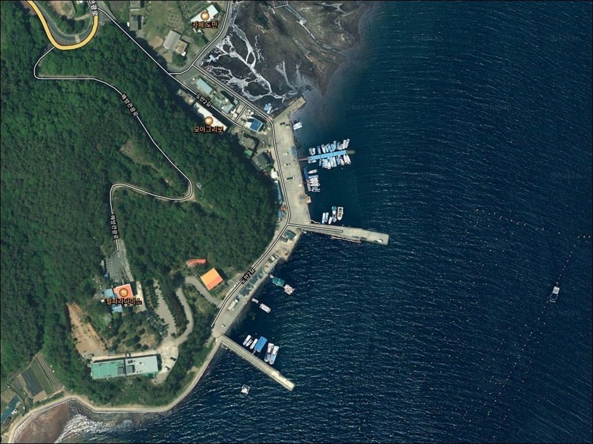
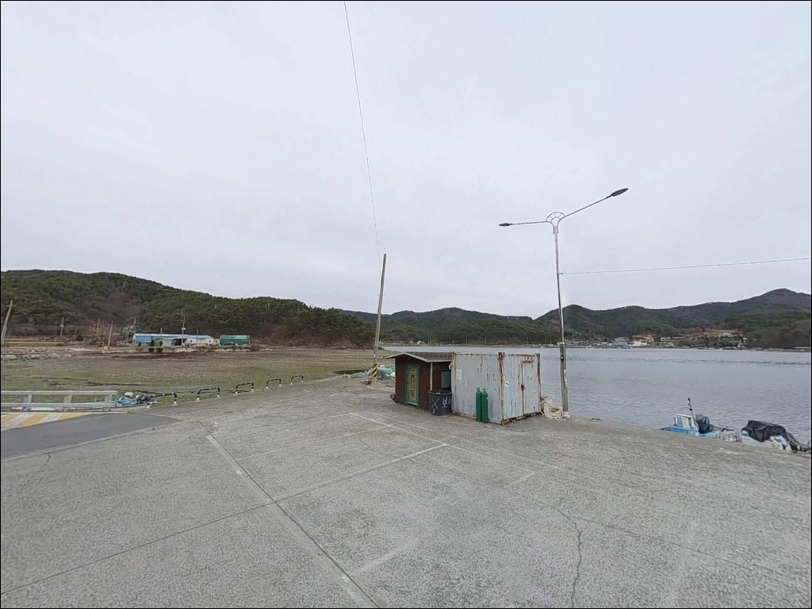
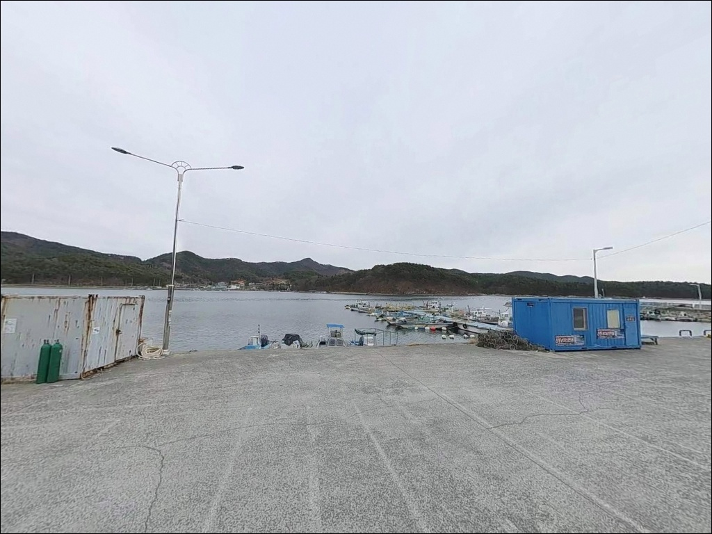
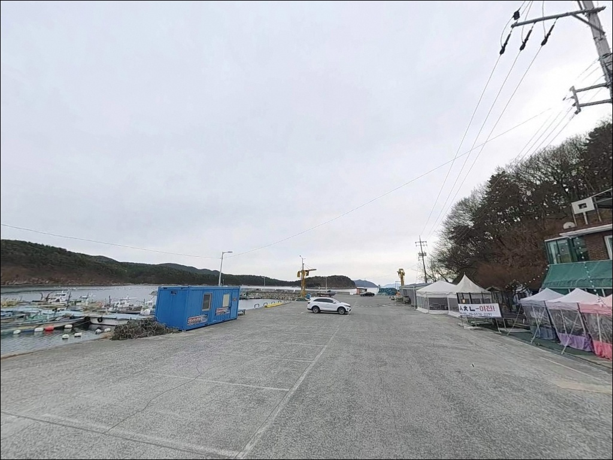
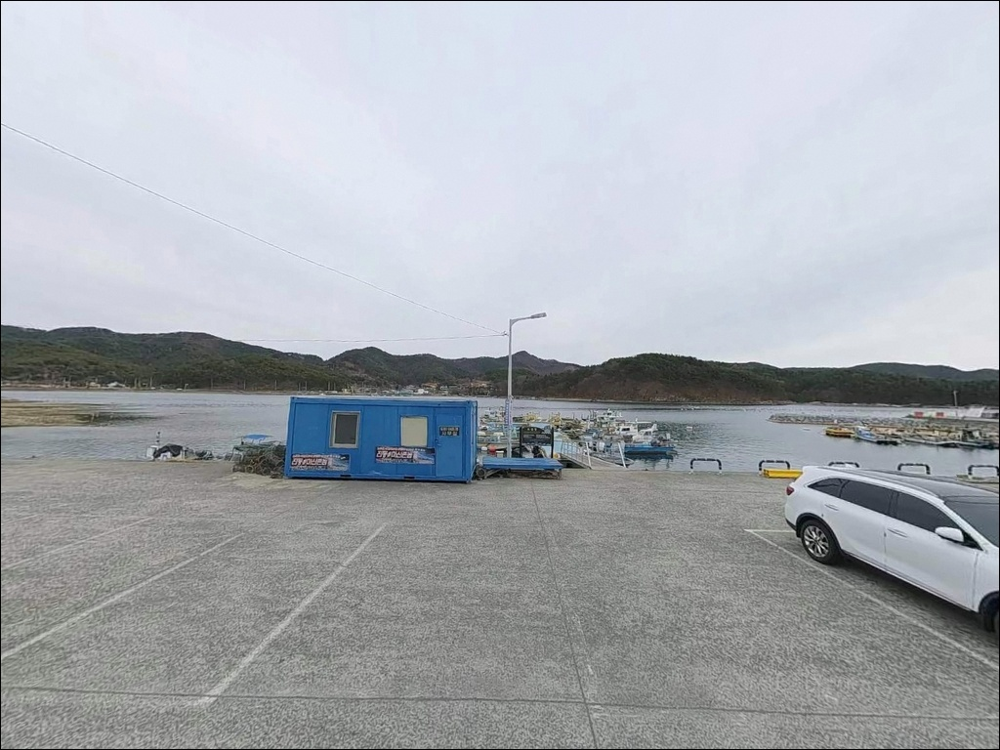
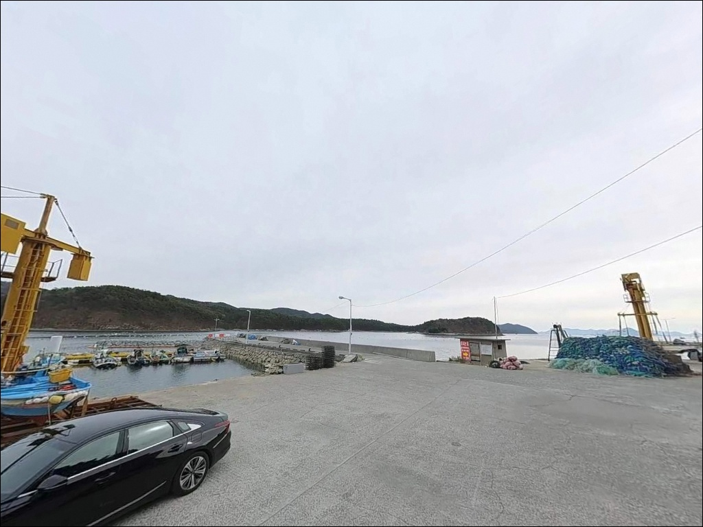
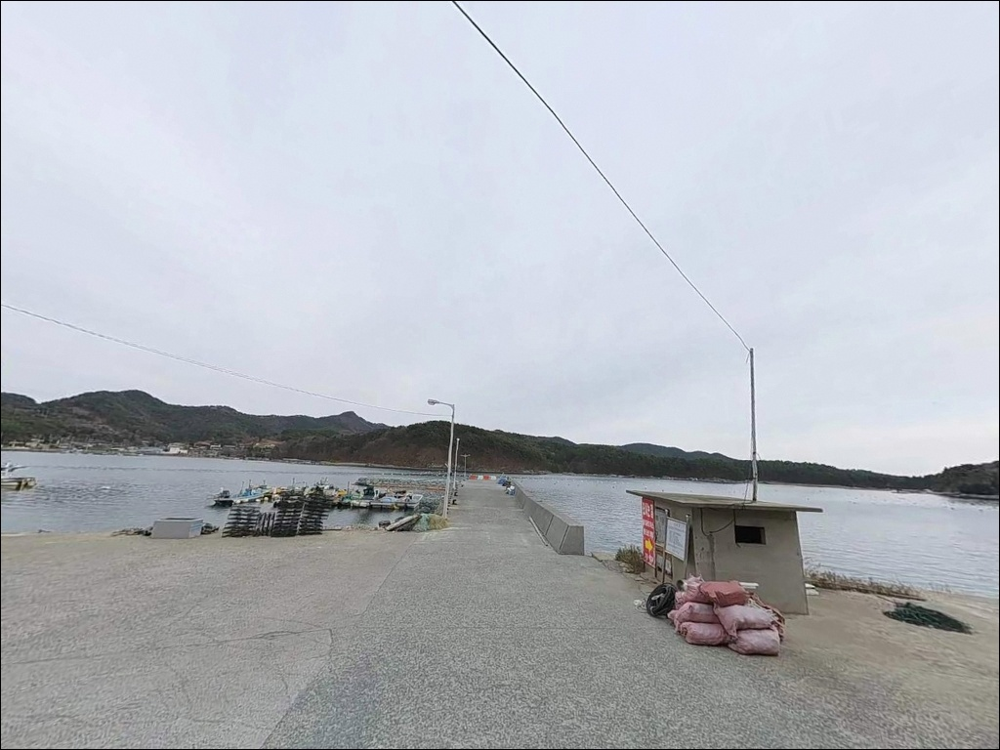
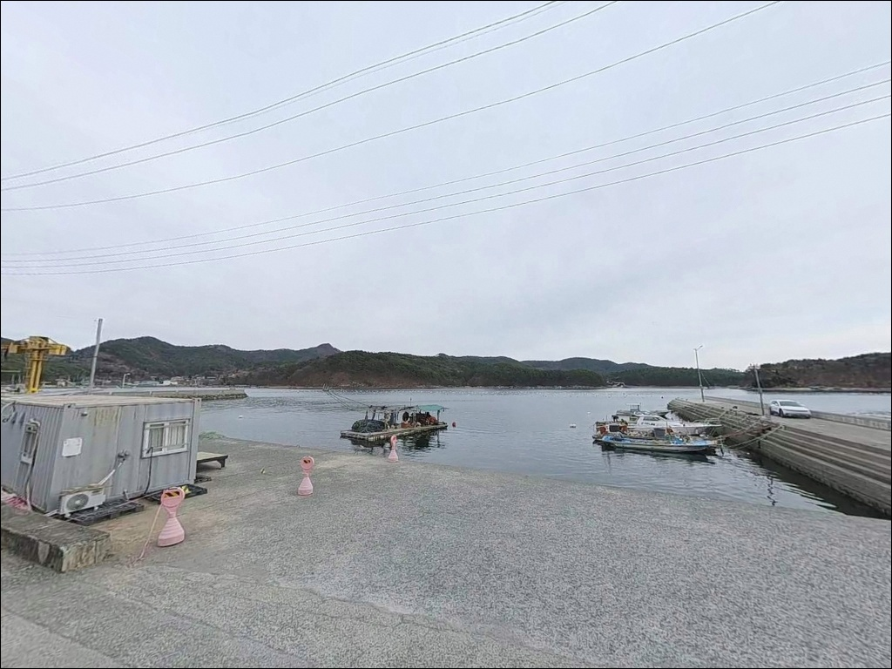
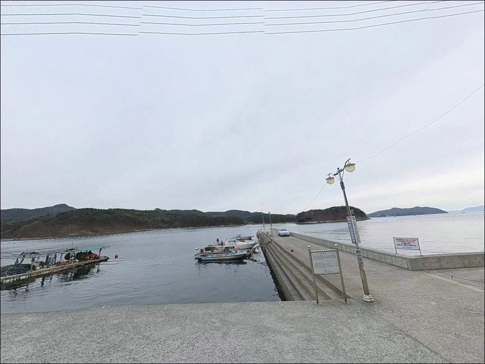

채비 자꾸 걸릴 때, 잘피군락 외곽 경계 노려 살려낸 다구리선착장 에깅


포인트 안내
다구리선착장
경남 창원시 마산합포구 진동면 다구리 136-9
내만형 포인트라고 물때를 무시하면
채비만 던지다 끝나는 상황이 생깁니다.
다구리선착장은 만조 전후 조류가 움직이는
타이밍에 활성도가 달라지는 구조로,
이 차이를 모르고 진입하면
낚시 효율이 현저히 떨어집니다.
이 글은 다구리선착장의
지형 조건, 에깅 공략법, 진입 동선,
차박 여건에 집중합니다.
조황 단정이나 특정 어종 보장은
이 글의 범위에 포함되지 않습니다.

1. 포인트 위치 및 진입 동선 분석
마산합포구 진동면 다구리 마을 해안도로를 따라
선착장까지 차량 직접 진입이 가능합니다.
진입로는 어촌마을 생활도로 수준으로
폭이 좁고, 일부 구간은
차량 교행이 어려운 1차선 구간이 포함됩니다.
포장도로이므로 비포장 구간 걱정은 없습니다.
선착장 앞 공간에서 차량 회차가 가능합니다.
다만 소형 선착장 특성상 공간이 넉넉하지 않아,
대형 SUV나 캠핑카를 운용하는 경우
출발 전 위성지도로 도로 폭을
사전 확인하고 가는 편이 안전합니다.
주차는 선착장 인접 공터와
마을 진입 직전 해안도로 갓길을 활용합니다.
어선 이동 동선을 막지 않는 자리를
현장에서 먼저 확인한 뒤
차를 세우는 것이 기본 매너입니다.

2. 차박 환경 평가 및 야간 체류 여건
다구리는 소규모 어촌마을로
민가 밀집도가 낮습니다.
야간에는 차량 통행이 드물고,
내만형 지형 특성상 파도 소음도 거의 없어
조용한 체류 환경이 갖춰져 있습니다.
마을 가로등이 일부 있어
완전 암흑 환경은 아니지만,
방파제 외곽으로 갈수록 조도가 낮아지므로
개인 조명은 필수입니다.
선착장 인근 공터를 활용한 차박이 가능합니다.
다만 어선 입·출항이 이루어지는 공간이므로,
현장 도착 후 어업 작업 동선과의 충돌 여부를
먼저 확인해야 합니다.
낚시를 마치고 조용히 하룻밤 머무는 용도로는
나쁘지 않은 차박 환경입니다.

3. 주변 편의시설 및 인프라 현황
다구리 자체에는 편의점과 마트가 없습니다.
진동읍내 방향으로 약 3~4km 이동하면
진동농협하나로마트와 편의점을 이용할 수 있습니다.
낚시 소품, 식료품, 얼음은
출발 전 진동읍내에서
사전 조달하는 것이 현실적인 준비 방식입니다.
주유소도 진동읍내 방면에서 해결할 수 있습니다.
응급 상황 발생 시 마산합포구 시내권으로
이동해야 하므로,
출발 전 비상약품과 수분을
충분히 준비해두는 편이 좋습니다.

4. 물때부터 확인해야 하는 이유
방문 전 가장 먼저 확인할 것은 물때입니다.
내만형 포인트라도 만조 전후
조류가 움직이는 타이밍에 활성도 차이가 납니다.
바다타임에서 진동면 기준 물때를 확인하고,
만조 전후 1~2시간을 노려
출발 시각을 맞추는 것이 기본 전략입니다.
잘피군락이 형성된 지형 특성상
채비 밑걸림이 잦습니다.
에깅 채비 여분을 넉넉하게 준비하고,
군락 외곽 경계를 공략하는 방식을
염두에 두고 진입하는 것이 좋습니다.
어촌마을 선착장이라 어선 작업이
이루어지는 공간입니다.
어선 이동 동선을 배려해 자리를 선정하고,
야간에는 헤드랜턴과 구명조끼를
반드시 착용해야 합니다.
방파제 발판에 이끼 구간이 있으므로
미끄럼에 주의가 필요합니다.
출조 전에 다구리 조황 또는
광암방파제 낚시로 검색해
최신 정보를 확인해 보시길 권합니다.

5. 지형 기반 낚시 여건 분석
다구리선착장은 진동만 내만 깊숙이 위치한
소형 어촌 항 구조입니다.
방파제와 선착장이 나란히 구성되어 있으며,
외항 방향으로 잘피군락이 형성되어 있습니다.
수심은 선착장 인접부가 얕고
방파제 끝단 외항 방향으로
점차 깊어지는 구조입니다.
방파제 전면 수심은 4~6m권으로
깊지 않지만, 조류 소통이 꾸준하게
이루어지는 구조입니다.
만조 전후에 활성도가 높아지는 패턴이
이 포인트의 핵심 지형 특성입니다.
방파제 끝단 외항 방향이
낚시 집중 공략 지점입니다.
내만 바닥은 펄과 모래가 섞인
혼합 저질 구조이며,
이 일대 해역 패턴상 봄철 도다리와 감성돔,
가을철 갑오징어와 무늬오징어가
기대되는 시즌 어종입니다.
최신 조황은 출조 전에 반드시 검색해
확인하시기 바랍니다.


6. 포인트에 적합한 낚시 스타일 제안
에깅이 이 포인트에 가장 잘 맞는 방식입니다.
외항 잘피군락 외곽 경계를 노리는 공략이
지형 조건과 맞아떨어집니다.
수심이 깊지 않은 내만형 구조이므로
3.0~3.5호 섈로우 타입 에기로
바닥층과 중층을 번갈아 탐색하는
방식이 유효합니다.
군락 외곽 경계를 따라 공략하는 것이
밑걸림을 줄이는 기본 운용법입니다.
루어낚시도 이 포인트 구조에 어울립니다.
소형 지그헤드 웜 조합으로
선착장 외벽과 방파제 석축 틈새를 노리는
방식이 야간 기준 유효합니다.
볼락을 기대해볼 수 있는 구간입니다.
야간 진입 시 발판 이끼 구간을 확인하고
미끄럼 주의가 필수입니다.
원투낚시는 보조 방식으로 활용할 수 있습니다.
방파제 외항 방향으로 40~50m 근투 수준으로도
바닥 어종을 기대해볼 수 있습니다.
내만 펄·모래 혼합 바닥층 구조로
밑걸림이 적어
초보자가 접근하기 좋은 안정적인 환경입니다.

7. 대안 포인트 및 플랜 B 동선
다구리선착장 여건이 맞지 않을 때
첫 번째 대안은 광암방파제입니다.
약 4km 거리에 위치하며
동일 해역에서 에깅과 원투 모두 가능한
방파제 구조입니다.
해수욕장과 인접해
편의시설 접근도 다구리보다 용이합니다.
구산면 연안 방파제군은 약 8~10km 거리입니다.
감성돔·볼락·도다리·갑오징어 포인트가
밀집된 광역 포인트권으로,
다구리에서 남서쪽 해안도로를 따라
이동하면 접근이 가능합니다.
낚시 여건이 더 다양하게 확보된 권역입니다.
차박 대안으로는 광암해수욕장 주차장이 있습니다.
약 4~5km 거리로
화장실과 주변 상권 이용이 편리해
다구리보다 편의시설 조건이 우수한
대안 체류지입니다.

조용한 내만을 제대로 읽으면
다구리선착장이 달라집니다
내만형 포인트라고 물때와 지형을 소홀히 생각하면
이 포인트의 가능성을 놓치게 됩니다.
잘피군락이 형성된 외항 경계를
만조 전후 타이밍에 에기로 공략하는 방식이
다구리선착장 지형과 가장 잘 맞습니다.
에깅에 익숙한 낚시인이라면
조용한 내만에서 기대 이상의 가능성을
확인할 수 있는 포인트입니다.
진입로가 좁고 편의시설이
가까이 없어 사전 준비가 필요하지만,
파도 걱정 없는 어촌 선착장에서
차박을 겸한 하룻밤 낚시를 원하는 분께는
조용하고 부담 없는 선택이 될 수 있는 곳입니다.